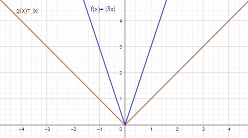
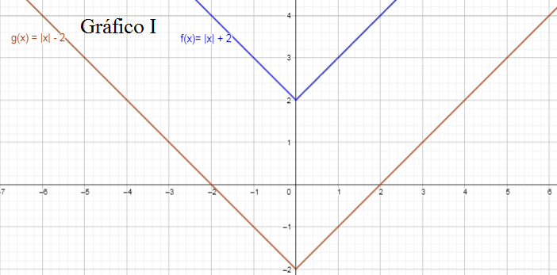
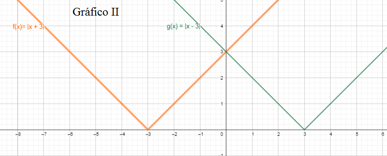

Funções Modulares
Ter um valor dentro do módulo significa que é apenas o valor numérico que está sendo levado em consideração, excluíndo o sinal. Então -x e +x dentro do módulo ficam iguais: |X|. Seguindo essa linha, a variável dentro do módulo em uma função modular deve ser considerada com o valor positivo e nagativo. |x| = 3 --> x = 3 e x = -3.
O módulo em uma função também altera o seu gráfico. Por exemplo o gráfico da função f(x)= x
=x.png)
Aplicando o módulo nesta função obtem-se f(x)= |x|. Com a função dentro do módulo, a parte negativa do eixo y será espelhada para a parte positiva, como é possível ver na imagem abaixo.
=x%20no%20m%C3%B3dulo.png)
Ao variar o valor do coeficiente x o resultado será um gráfico mais "fechado", como pode ser observado na imagem. O gráfico de f(x)=|3x| é mais fechado pois seu coeficiente x possui variação, enquanto g(x)=|x| não possui variação no x. (O gráfico de f(x)= |3x| e f(x)= |-3x| será igual, já que o módulo transforma os valores para positivo);
Também é possível somar e subtrair valores dentro e fora do módulo. O gráfico I mostra o que acontece quando um valor é somado e subtraído fora do módulo, enquanto o gráfico II mostra o que acontece quando uma valor é somado e subtraído dentro do módulo.
 